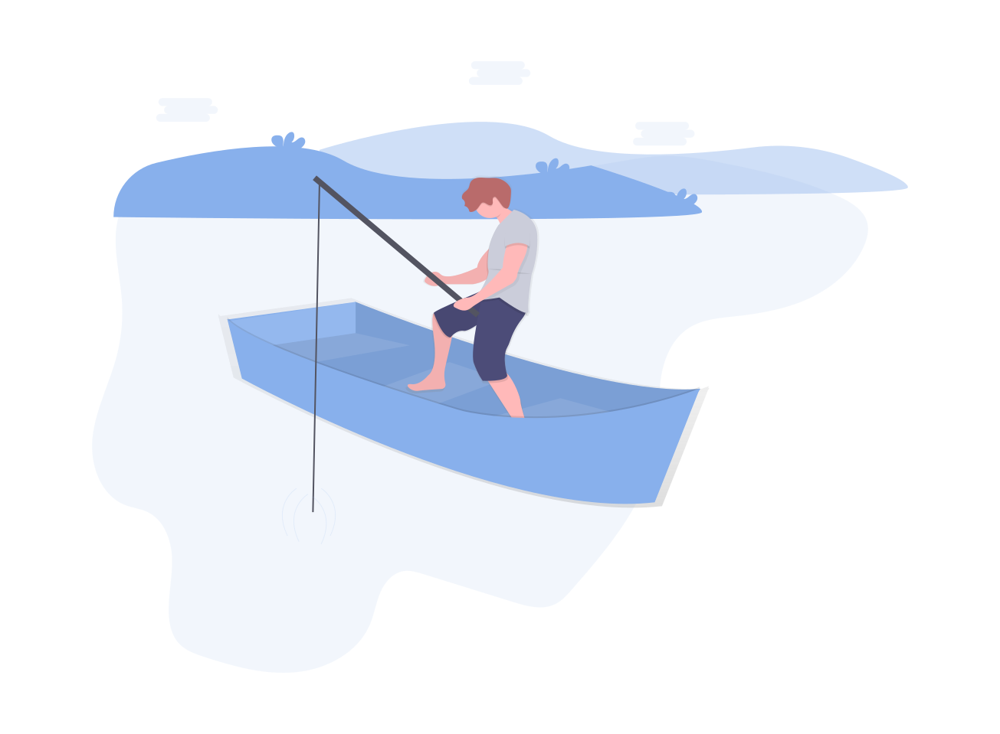

سلام
accessibility
اینجا سایت شخصیه من هست
اگر دوست داری بیشتر با من و علایق من آشنا بشی برو پایین و مطالب سایت رو بخون
جشن تولد6 سالگیم
توی تولد 6 سالگیم
همه دوستام
فقط خانوادم کنارم بودن، چون کرونا بود
جشن تولد 7 سالگیم
خیلی خوشحال بودم چون توی تولدم
دوستام
دعوت بودن
جشن تولد 5 ساگیم
یادم نمیاد چون خیلی کوچیک بودم ولی عکس ها و فیلماشو دارم
سرگرمی های من
accessibility
add_a_photo
عکاسی
airplanemode_active
مسافرت
beach_access
شنا
cake
مهمونی
content_cut
کاردستی
create
خاطره نویسی
directions_bike
دوچرخه سواری
group
دورهمی
local_grocery_store
خرید
airplanemode_active
مسافرت
beach_access
شنا
اینجا ساحل زیبای ریشهر ....
اگر از دیدن عکسای ساحل لذت میبری میتونی بیای گالری منو ببینی، اونجا بیشتر از 100 تا عکس دارم.
beach_access
فعایت ها و ورزش های آبی
beach_access
در لیست زیر تمام فعالیت های ورزشی که در تابستان 1401 داشتم را میبینید

تیکی تیکی، یک بز خیلی خیلی خوشحال بود! اون داشت برای اولین بار به برکه میرفت! چون وقت حمام بود!
اولش تیکی تیکی از آب ترسیده بود، اما وقتی بقیهی بزها رو دید که دارن توی برکه آب بازی میکنن و بالا و پایین میپرن، ترسش ریخت و پرید توی آب برکه!
همهی بزها حسابی خندیدن و به هم آب پاشیدن!
و کلی بازی کردن و بهشون خوش گذشت!
تیکی تیکی یک عالمه حباب دور خودش دید!
حبابها داشتن با صدای بلوپ بلوپ بلوپ دور اون میترکیدن!
بعد از از اون روز باحال، تیکی تیکی میخواست بدونه که حبابها چجوری درست میشن!
برای همین اون رفت و از بابا بزی پرسید! ولی بابا بزی گفته که نمیدونه!
تیکی تیکی رفت و از مادرش پرسید!
اما مامان بزی هم گفت که نمیدونه!
پس تیکی تیکی تصمیم گرفت که معمای حبابها رو خودش حل کنه!
تیکی تیکی دمش رو محکم زد به آب!
و بعدش محکم و با تموم قدرت به سطح آب فوت کرد!
اما اون نتونست هیچ حبابی درست کنه!
یک روز که تیکی تیکی حسابی بازی کرده بود و گرمش شده بود، تصمیم گرفت که بره و توی آب خنک برکه شنا کنه!
و بعد اون چشمش به ماهیها افتاد که داشتن توی آب نفس میکشیدن و حباب درست میکردن!
حبابهای بزرگ و حبابهای کوچیک!
وقتی که ماهیها نفس میکشیدن، گاز از توی دهنشون میومد بیرون و بلوپ بلوپ میرفت روی سطح آب!
تیکی تیکی خوشحال بود! اون راز حبابهای بامزه رو فهمیده بود!
یک سال بعد، وقتی خواهر تیکی تیکی برای اولین بار به برکه اومد، از تیکی تیکی پرسید که حبابها چجوری درست میشن!
و تیکی تیکی خواهرش رو برد زیر آب تا نفس کشیدن ماهیها رو بهش نشون بده!
تیکی تیکی، یک بز خیلی خیلی خوشحال بود! اون داشت برای اولین بار به برکه میرفت! چون وقت حمام بود!
اولش تیکی تیکی از آب ترسیده بود، اما وقتی بقیهی بزها رو دید که دارن توی برکه آب بازی میکنن و بالا و پایین میپرن، ترسش ریخت و پرید توی آب برکه!
همهی بزها حسابی خندیدن و به هم آب پاشیدن!
و کلی بازی کردن و بهشون خوش گذشت!
تیکی تیکی یک عالمه حباب دور خودش دید!
حبابها داشتن با صدای بلوپ بلوپ بلوپ دور اون میترکیدن!
بعد از از اون روز باحال، تیکی تیکی میخواست بدونه که حبابها چجوری درست میشن!
برای همین اون رفت و از بابا بزی پرسید! ولی بابا بزی گفته که نمیدونه!
تیکی تیکی رفت و از مادرش پرسید!
اما مامان بزی هم گفت که نمیدونه!
ادامه داستان
پس تیکی تیکی تصمیم گرفت که معمای حبابها رو خودش حل کنه!
تیکی تیکی دمش رو محکم زد به آب!
و بعدش محکم و با تموم قدرت به سطح آب فوت کرد!
اما اون نتونست هیچ حبابی درست کنه!
یک روز که تیکی تیکی حسابی بازی کرده بود و گرمش شده بود، تصمیم گرفت که بره و توی آب خنک برکه شنا کنه!
و بعد اون چشمش به ماهیها افتاد که داشتن توی آب نفس میکشیدن و حباب درست میکردن!
حبابهای بزرگ و حبابهای کوچیک!
وقتی که ماهیها نفس میکشیدن، گاز از توی دهنشون میومد بیرون و بلوپ بلوپ میرفت روی سطح آب!
تیکی تیکی خوشحال بود! اون راز حبابهای بامزه رو فهمیده بود!
یک سال بعد، وقتی خواهر تیکی تیکی برای اولین بار به برکه اومد، از تیکی تیکی پرسید که حبابها چجوری درست میشن!
و تیکی تیکی خواهرش رو برد زیر آب تا نفس کشیدن ماهیها رو بهش نشون بده!